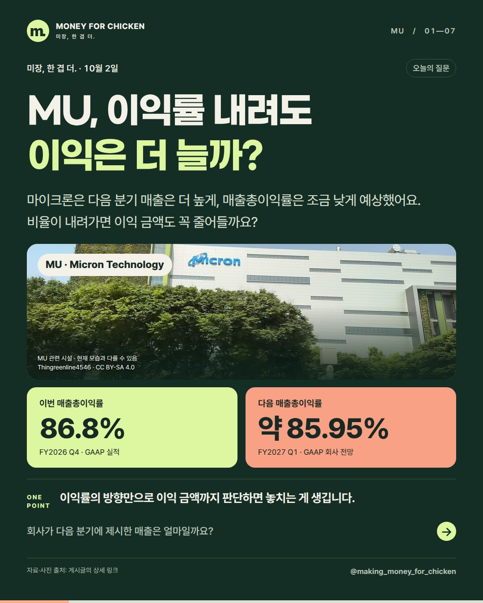
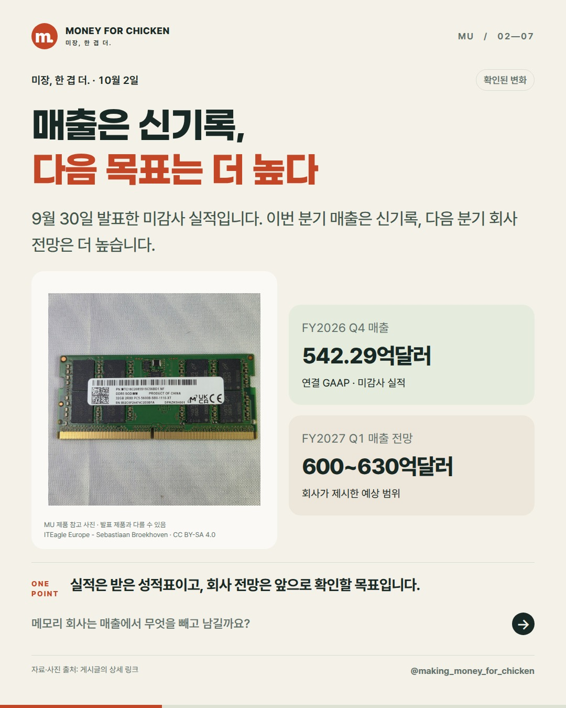
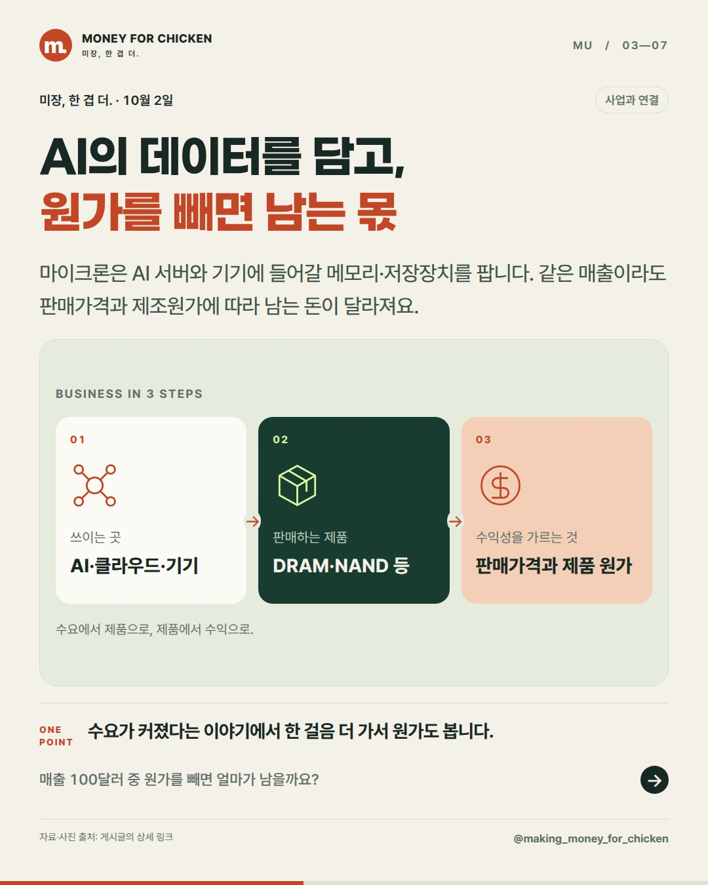
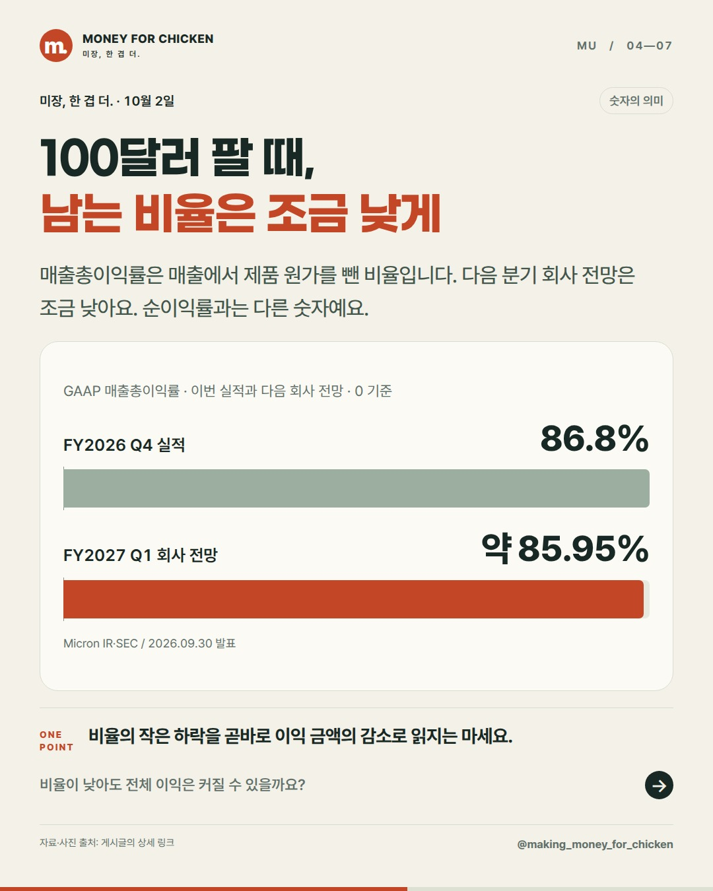
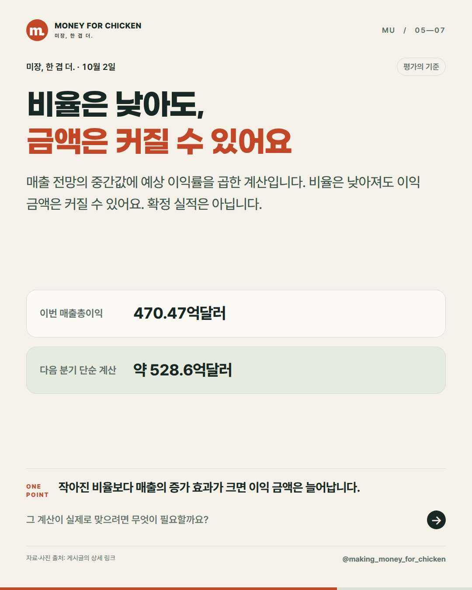
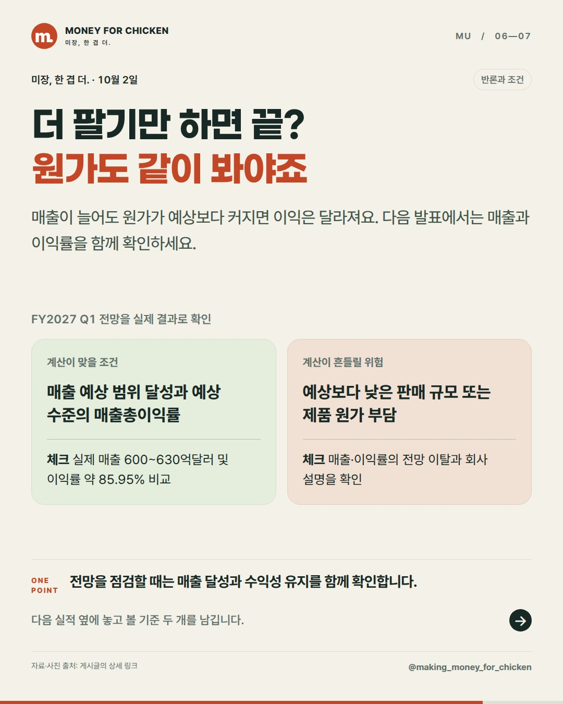
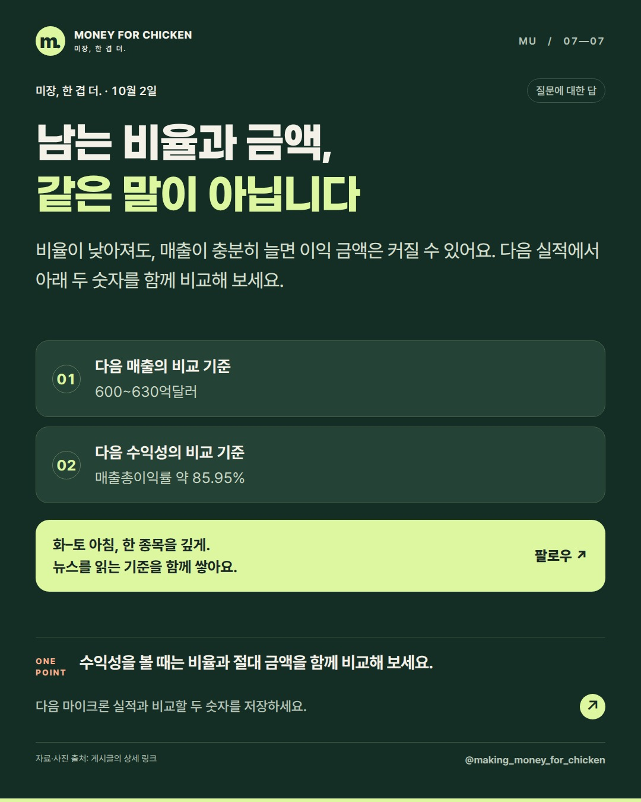

01 / 07
MU, 이익률 내려도 이익은 더 늘까?

마이크론은 다음 분기 매출은 더 높게, 매출총이익률은 조금 낮게 예상했어요. 비율이 내려가면 이익 금액도 꼭 줄어들까요?
이익률의 방향만으로 이익 금액까지 판단하면 놓치는 게 생깁니다.
회사가 다음 분기에 제시한 매출은 얼마일까요?
미장, 한 겹 더. · 10월 2일
매출총이익은 매출과 매출총이익률을 함께 봐야 합니다. 마이크론의 다음 분기 전망을 계산하면 비율은 낮아져도 금액은 커질 수 있습니다. 다만 실제 달성 여부와 주가 평가는 별개입니다.
01 / 07

마이크론은 다음 분기 매출은 더 높게, 매출총이익률은 조금 낮게 예상했어요. 비율이 내려가면 이익 금액도 꼭 줄어들까요?
이익률의 방향만으로 이익 금액까지 판단하면 놓치는 게 생깁니다.
회사가 다음 분기에 제시한 매출은 얼마일까요?
02 / 07

9월 30일 발표한 미감사 실적입니다. 이번 분기 매출은 신기록, 다음 분기 회사 전망은 더 높습니다.
실적은 받은 성적표이고, 회사 전망은 앞으로 확인할 목표입니다.
메모리 회사는 매출에서 무엇을 빼고 남길까요?
03 / 07

마이크론은 AI 서버와 기기에 들어갈 메모리·저장장치를 팝니다. 같은 매출이라도 판매가격과 제조원가에 따라 남는 돈이 달라져요.
수요가 커졌다는 이야기에서 한 걸음 더 가서 원가도 봅니다.
매출 100달러 중 원가를 빼면 얼마가 남을까요?
04 / 07

매출총이익률은 매출에서 제품 원가를 뺀 비율입니다. 다음 분기 회사 전망은 조금 낮아요. 순이익률과는 다른 숫자예요.
비율의 작은 하락을 곧바로 이익 금액의 감소로 읽지는 마세요.
비율이 낮아도 전체 이익은 커질 수 있을까요?
05 / 07

매출 전망의 중간값에 예상 이익률을 곱한 계산입니다. 비율은 낮아져도 이익 금액은 커질 수 있어요. 확정 실적은 아닙니다.
작아진 비율보다 매출의 증가 효과가 크면 이익 금액은 늘어납니다.
그 계산이 실제로 맞으려면 무엇이 필요할까요?
06 / 07

매출이 늘어도 원가가 예상보다 커지면 이익은 달라져요. 다음 발표에서는 매출과 이익률을 함께 확인하세요.
전망을 점검할 때는 매출 달성과 수익성 유지를 함께 확인합니다.
다음 실적 옆에 놓고 볼 기준 두 개를 남깁니다.
07 / 07

비율이 낮아져도, 매출이 충분히 늘면 이익 금액은 커질 수 있어요. 다음 실적에서 아래 두 숫자를 함께 비교해 보세요.
수익성을 볼 때는 비율과 절대 금액을 함께 비교해 보세요.
다음 마이크론 실적과 비교할 두 숫자를 저장하세요.